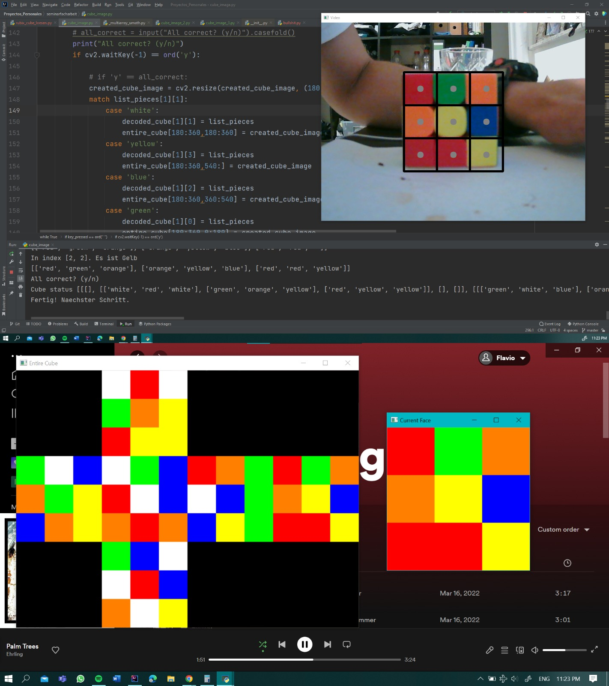

• Binomial Distribution
I created a program called mathe_binominalverteilung.py that calculates the binomial distribution, for my Math class.

Prior to the pandemic, I had never used a computer in my life. But when circumstances demanded it, I quickly learned the basics and discovered that computers could be both functional and fun. This newfound interest led me to explore the workings of computers and inspired me to learn programming languages on my own, as my school didn't offer an informatics curriculum at that time. Since then, my fascination with computers has only grown. I've watched countless tutorials online and have undertaken numerous personal projects. This passion has led me to decide to study Computer Science at a University.
I took on a project to develop a program that uses a camera input to interpret the structure of a Rubik's cube and provide a clear sequence of steps to solve it. The project comprises two programs: cube_image.py handles image processing, while rubix_cube_loesen.py generates the necessary steps to solve the cube and displays the output visually.
I created a program called mathe_binominalverteilung.py that calculates the binomial distribution, for my Math class.
During the period of online classes, I developed get_into_class.py. Its purpose was to automatically join me into my daily video conferences, enabling me to save time and avoid missing any of my classes.
I developed a basic Tetris game using Python. tetris.py
Games Talente, a German organization, hosts a competition in which participants can submit their video games. I submited my video game Games_Talente_Projekt.py, and it was selected as a winner. As a result, I was able to participate in an amazing week-long workshop, during which I learned a lot.
I have a strong grasp of Python, having completed multiple courses and currently enrolled in the free Harvard CS50 AI with Python course. I am highly proficient in the language's syntax and can confidently code without external help. Additionally, I have completed several personal projects.
C++ is my preferred programming language because of its ability to provide complete hardware control, which enhances my understanding of both programming and computers. I learnt C++ during my computer science internship in Cottbus.
Website design and functionality - this website was coded entirely in HTML & CSS without the help of any other software.
I learned C# in my Informatics class, but still need to frequently reference syntax while programming. I have yet to master the language and haven't pursued any personal projects with it.
I also learned this language in my informatics class and am comfortable writing simple scripts, but lack a deep understanding of it.
Basic modeling for my 3D printing projects.
Learned basic MySQL skills for creating and editing tables in my informatics class, understanding of DBMS.
I learned it for my Rubik's cube solver project.